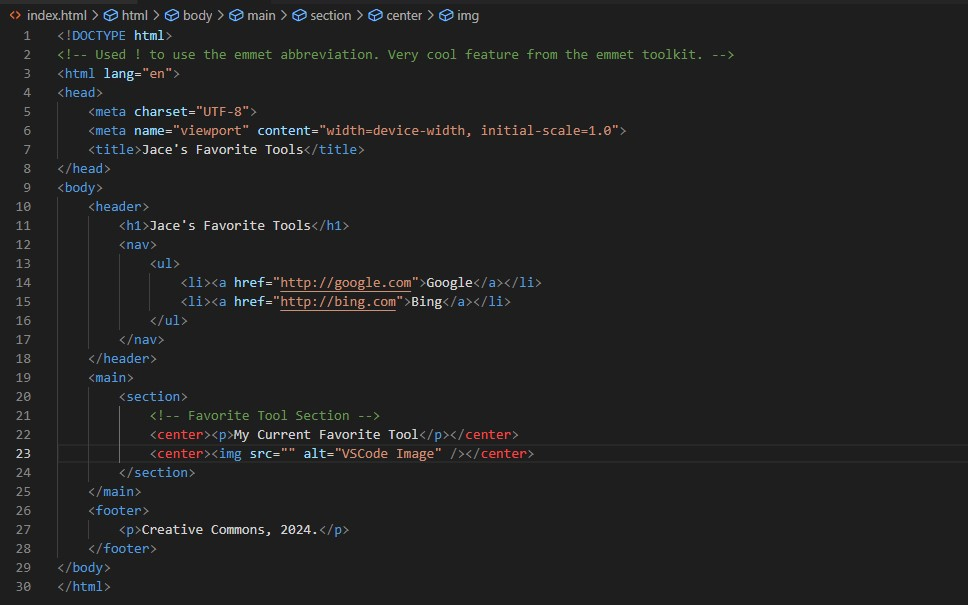
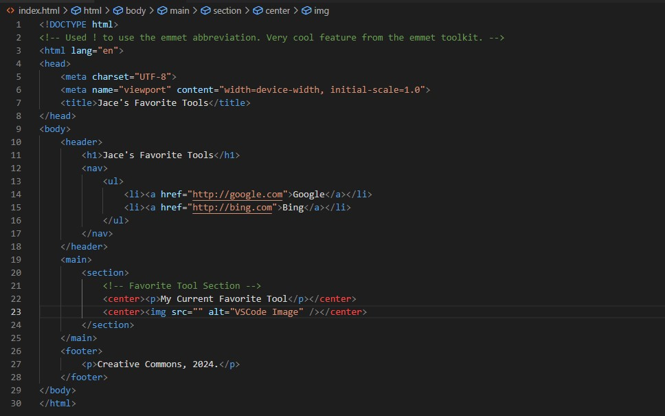

My Current Favorite Tool
I love VSCode because it is freely available to the public and has a ton of plugins.
Honorable Mentions:
- Emmet
- Github
- Oh My Zsh
My Current Favorite Tool
I love VSCode because it is freely available to the public and has a ton of plugins.